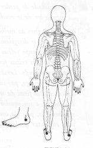
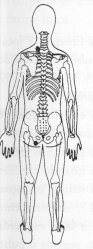

Trava de Segurança da Energia 16 - Terceira Profundidade.
|

|
TSE 16
Colocar a mão na face externa do tornozelo, entre o osso do tornozelo e o calcanhar TSE 16. ou M.d. sobre a parte posterior do pescoço abaixo da junção com o ombro esquerdo TSE 11;
M.e. na nádega esquerda TSE 25.
|
 |
Notas:1 - M.d. = mão direita M.e. = mão esquerda.
2 - O texto sublinhado indica que pode ser feito usando alternadamente o lado
direito (mão direita) e depois o lado esquerdo (mão esquerda).
3 - Tocar a área indicada, com a ponta dos dedos da mão, durante
alguns minutos ou até sentir uma pulsação rítmica.
Não precisamos nos preocupar em demasia com a precisão da área
indicada, pois cada trava de segurança da energia tem uma abragência
de uns sete centímetros em torno de si.